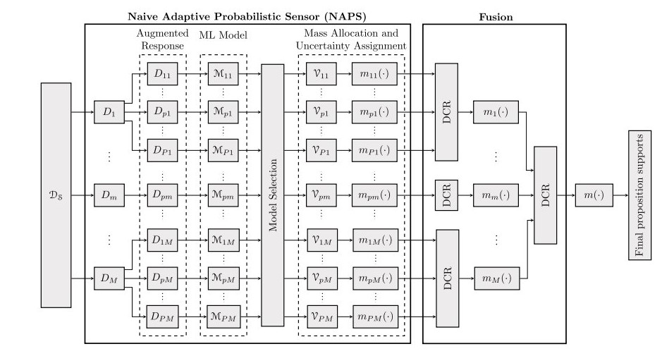

RTL & FPGA Design
Intel RTL Sub-IP Design


MIPS Microprocessor Design
Autonomous Car on SoC
Pong Game on FPGA
Applied Engineering

Pontiac Fiero Restoration

Raspberry Pi Roulette
Keyboard Synthesizer (USART)
Machine Learning
